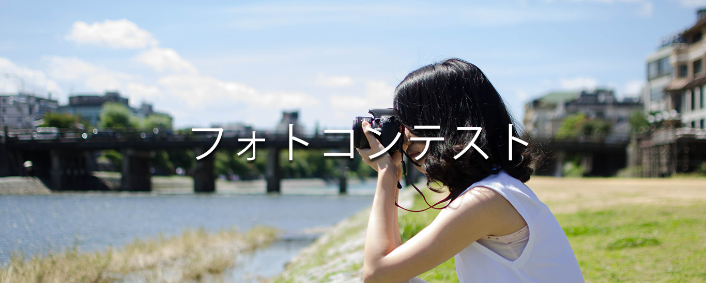
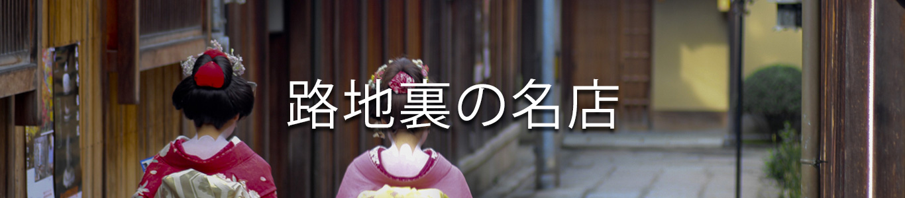

toggle navigation
メニュー
トップ
季節特集
京都三大祭り
京都うまいもん
イベント
アンケート
おこしやす
京都
三大祭
メニュー
トップ
季節特集
京都三大祭り
京都うまいもん
イベント
アンケート
TOP
京都
三
大祭り
京都は日本が誇る古都。平安の世から続く王朝文化が色濃く残り、 数多くの神社仏閣とともに、数々の祭が現在まで伝えられています。 その中で、1000年以上の歴史ある、 春の「葵祭」と夏の「祇園祭」、近代のものですが、 京都の歴史を集約させた大規模な祭である、 秋の「時代祭」を、「京都三大祭」としてご紹介します。
祇園祭り
京都を代表する「祇園祭」は、 1000年以上の歴史を誇る伝統の祭です。 祭は7月1日から1ヶ月に及び、 さまざまな行事を行いながら、 京都は本格的な夏を迎えます。、 祇園囃子の音が響く夏の夜の「宵山」、 祭のハイライトである「山鉾巡行」、 そして「神輿渡御」があります。
葵祭り
「葵祭」は、賀茂祭りとも言われ、 上賀茂神社と下鴨神社の例祭です。 平安時代から、朝廷の最も重要な祭祀として、 国家的な行事となっております。 最大の見どころは、平安の王朝文化を残す行列。 葵祭の呼称は、内裏の御簾や御所車、 勅使などの行列の全てが葵の葉で飾られているからです。
時代祭り
毎年秋に開催される「時代祭」は、平 安神宮の祭です。見どころは、各時代に扮した大行列。 明治維新・江戸・安土桃山・室町・吉野・鎌倉・藤原・延暦の 8つの時代の総勢2000名を超える行列となっています。 京都の伝統工芸の粋と時代考証によって復元されたものであります

